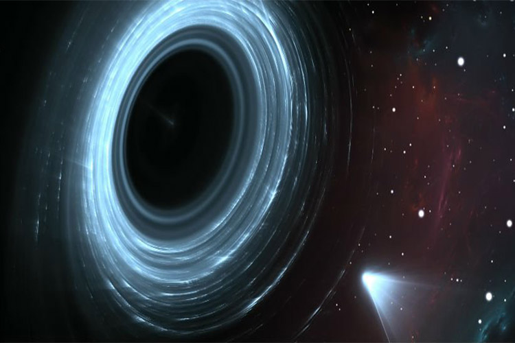
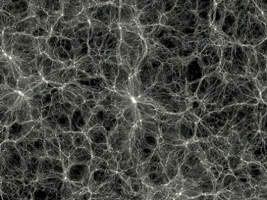
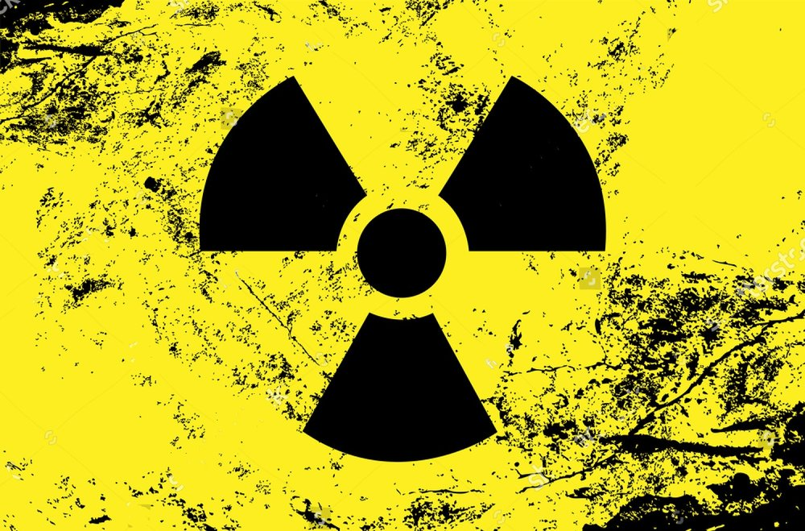
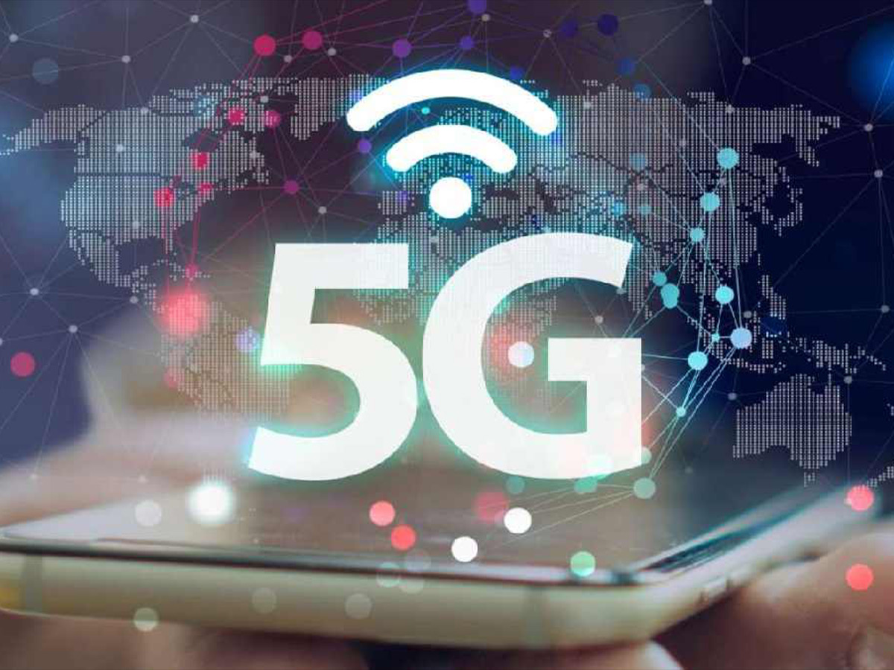
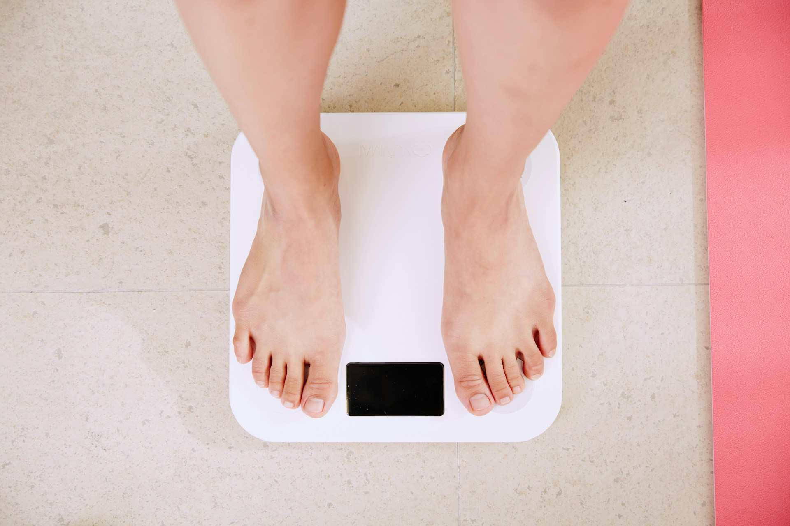
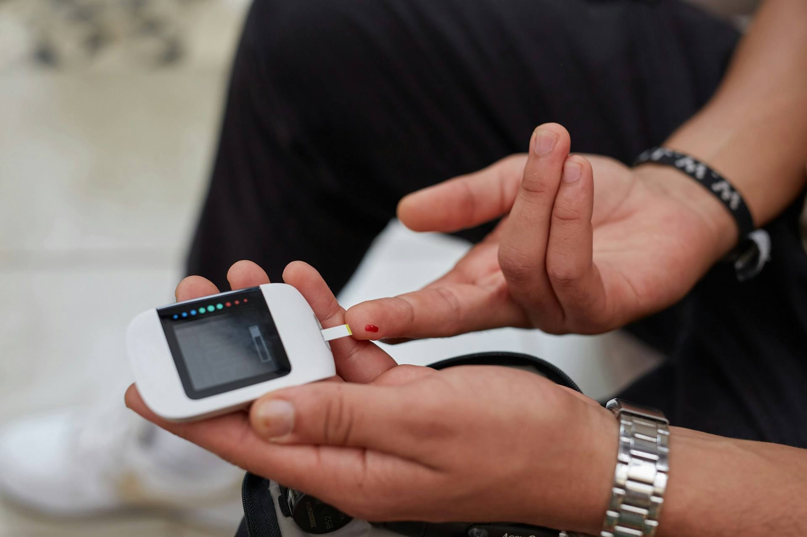

فضا
فضا
ویجر ۱
یکی از دورترین ساختههای بشر و یک فضاپیمای تاریخی.
مطالعه کامل ←از علم و فضا تا سلامت، فناوری و مهارتهای زندگی — هر چیزی که برای رشد و یادگیری نیاز داری.
صفحات دانشنما شامل موضوعات علمی گوناگون در زمینه فضا، فیزیک، زیستشناسی، زمینشناسی، فناوری، سلامت و کسب درآمد است.
فضا
یکی از دورترین ساختههای بشر و یک فضاپیمای تاریخی.
مطالعه کامل ← فضا
فضا
مأموریتی تاریخی برای بررسی مشتری، زحل، اورانوس و نپتون.
مطالعه کامل ← نجوم
نجوم
ناحیههایی از فضا-زمان با گرانش بسیار شدید.
مطالعه کامل ← فناوری فضایی
فناوری فضایی
برای ارتباطات، ناوبری، هواشناسی و پژوهش استفاده میشوند.
مطالعه کامل ← سیارهشناسی
سیارهشناسی
سیاره سرخ و یکی از مهمترین اهداف پژوهشهای رباتیک.
مطالعه کامل ← ستارهشناسی
ستارهشناسی
ستاره مرکزی منظومه شمسی و منبع اصلی انرژی زمین.
مطالعه کامل ← کیهانشناسی
کیهانشناسی
کهکشانی که منظومه شمسی در آن قرار دارد.
مطالعه کامل ← ستارهشناسی
ستارهشناسی
جرمهای درخشانی که انرژی خود را از فرایندهای هستهای میگیرند.
مطالعه کامل ← رصدخانه فضایی
رصدخانه فضایی
تلسکوپی فروسرخ برای مطالعه جهان دور.
مطالعه کامل ← رصدخانه فضایی
رصدخانه فضایی
یکی از مشهورترین تلسکوپهای فضایی.
مطالعه کامل ← مهندسی فضایی
مهندسی فضایی
آزمایشگاهی مداری برای پژوهشهای علمی.
مطالعه کامل ← نجوم
نجوم
سامانهای شامل خورشید، سیارات، قمرها و اجرام کوچکتر.
مطالعه کامل ←مرکز کنترل بدن و پردازش اطلاعات در جانداران.
مطالعه کامل ←
نجومپلی فرضی در فضا-زمان که دو نقطه دور از هم را به هم متصل میکند.
مطالعه کامل ←
کیهانشناسیماده نامرئی که حدود ۲۷٪ از کیهان را تشکیل میدهد.
مطالعه کامل ← کیهانشناسی
کیهانشناسی
نظریهای که توضیح میدهد جهان چگونه آغاز شده است.
مطالعه کامل ←
فناوریقدرتمندترین منبع انرژی بشر که از هسته اتم آزاد میشود.
مطالعه کامل ←
فناورینسل پنجم اینترنت پرسرعت با تأخیر فوقالعاده کم.
مطالعه کامل ←فناوریای که کاربر را در دنیای دیجیتال غرق میکند.
مطالعه کامل ←
سلامتراهنمای کامل و علمی کاهش وزن پایدار.
مطالعه کامل ←راهنمای کامل و علمی بهبود کیفیت خواب.
مطالعه کامل ←راهنمای کامل و علمی مدیریت استرس.
مطالعه کامل ←راهنمای کامل و علمی بهبود تمرکز و توجه.
مطالعه کامل ← سلامت
سلامت
راهنمای کامل و علمی تقویت ایمنی بدن.
مطالعه کامل ←
سلامتراهنمای کامل و علمی مدیریت قند خون.
مطالعه کامل ← سلامت
سلامت
راهنمای کامل و علمی بهبود حافظه و یادگیری.
مطالعه کامل ← سلامت
سلامت
راهنمای کامل و علمی تقویت اعتماد به نفس.
مطالعه کامل ←۱۵ روش واقعی کسب درآمد آنلاین.
مطالعه کامل ← فناوری
فناوری
۱۵ روش علمی برای افزایش سرعت گوشی.
مطالعه کامل ←۱۵ روش علمی برای مطالعه مؤثر و یادگیری عمیق.
مطالعه کامل ← نجوم
نجوم
شواهد علمی و احتمالات وجود موجودات فضایی.
مطالعه کامل ← سلامت
سلامت
۱۵ روش علمی و مؤثر برای مراقبت از پوست.
مطالعه کامل ←ساختار جدید جستجوی سریع، دستهبندی و موضوعات بیشتری دارد و میتوانیم در مرحله بعد صدها مقاله مستقل به آن اضافه کنیم.